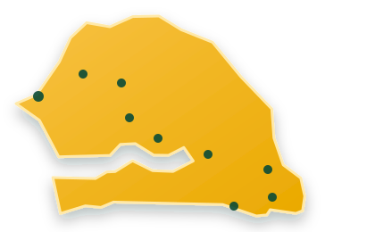

Avant de voyager
Les tarifs, horaires et lieux de départ peuvent être modifiés par le transporteur. Appelez avant de vous rendre au point de départ.
Comparez rapidement les trajets, les horaires et les tarifs publiés.

Source consultée le . Confirmez avant le départ.
Les tarifs, horaires et lieux de départ peuvent être modifiés par le transporteur. Appelez avant de vous rendre au point de départ.
Les données initiales sont issues du réseau interurbain publié par Dakar Dem Dikk.
Consulter la source officielle ↗Les trajets peuvent être complétés et mis à jour depuis l’espace administrateur local.
Ouvrir /admin